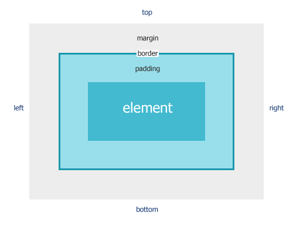

Box model
Box model은 컨텐츠의 넓이, 컨텐츠의 높이, 패딩, 테두리, 마진으로 이루어져 있다.
아래 이미지는 컨텐츠 영역과 마진, 테두리, 패딩이 어떻게 연관되어 있는지 보여준다.

요소
- content : 요소가 담고 있는 내용
- padding : content와 border사이의 간격
- border : 테두리 선
- margin : border와 다른 요소 사이의 간격